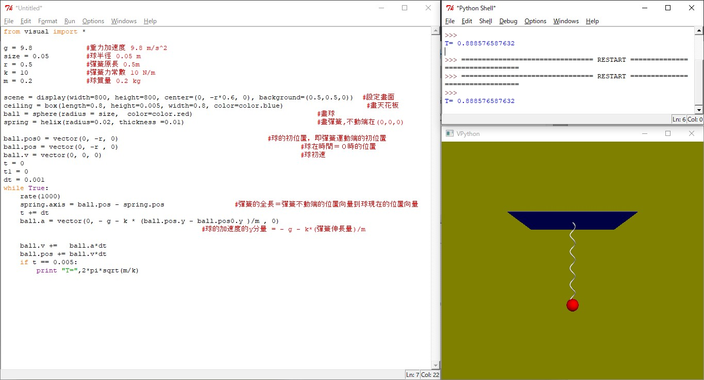
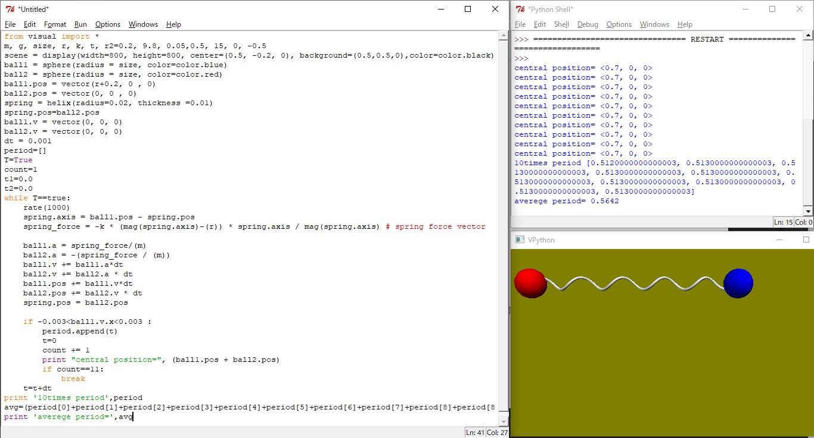

A spring with spring constant 10 N/m ,Natural length=0.5m hangs from the ceiling. A ball with radius 0.05m,M=0.1kg is attached to the spring.
Also answer the Period T=?
Simulate Two balls with masses m=0.2 each are connected by spring of length 0.5m and stiffness k=15kg/m and initially at rest on the table without friction.
